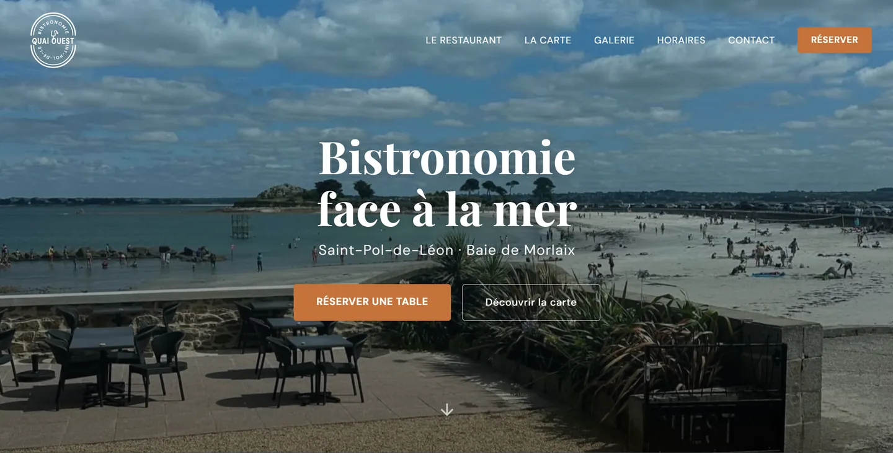
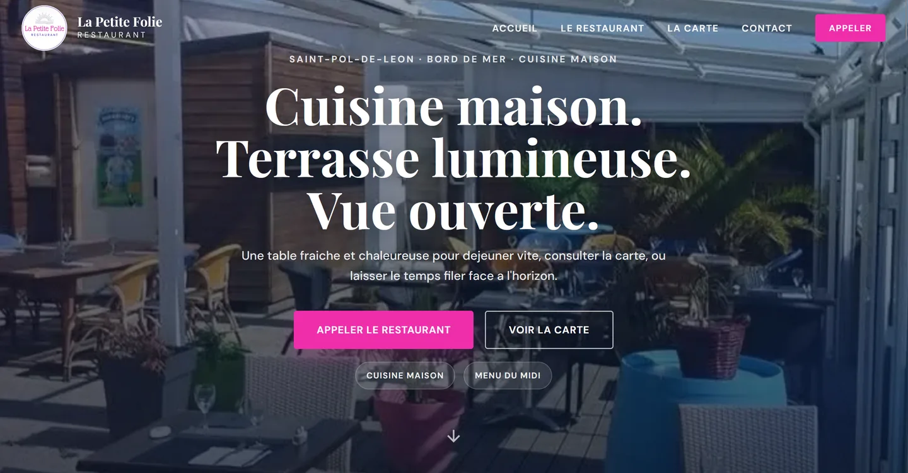
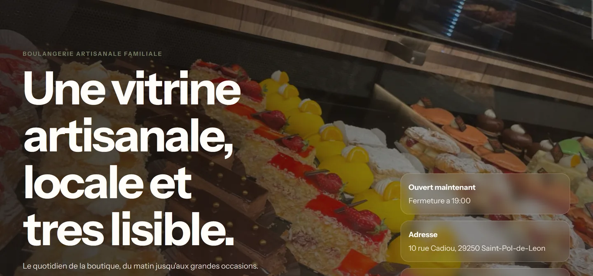

Pour qui
Artisans, restaurants, lieux et maisons qui ont du caractère
Studio web pour artisans, restaurants et maisons locales
Je conçois des pages sur mesure pour les activités qui se choisissent autant avec les yeux, l'ambiance et la confiance qu'avec une simple fiche Google. Le fond reste net. La forme laisse une vraie aura.
3
concepts déjà en ligne pour montrer des ambiances réelles
1 cap
clarifier, rassurer et rendre le contact évident
100 %
responsive, lisible et pensé mobile d'abord
sur mesure
pas de thème plaqué sur une activité qui mérite mieux
Créations
Les cartes projet restent immersives, mais elles adoptent maintenant une présentation plus légère, plus technologique et plus cohérente avec le reste du système visuel.

Restaurant / front de mer
Une vitrine plus immersive, plus atmosphérique, qui fait sentir le lieu, la lumière et le rythme avant le contenu détaillé.

Concept 02Restaurant / chaleur éditoriale
Une direction plus élégante, plus éditoriale, qui combine chaleur, confort et raffinement dans une interface plus douce.

Concept 03Boulangerie / commerce artisanal
Une vitrine plus directe et plus claire, qui met en avant le produit, l'identité locale et l'intention de marque.
Approche
Le redesign part d'une logique simple : plus de clarté, moins de masse visuelle, plus de précision et une vraie signature high-tech. On garde l'effet sur mesure, mais on le traduit avec une matière visuelle plus futuriste et plus premium.
Cap
L'ambiance devient plus cyber-luxury : fond nuit profond, lueurs métalliques, surfaces en verre, accents bleu électrique et détails fins. Le tout reste clair, lisible et aéré.
Lecture
Plus de contraste, plus de blancs, plus d'alignement et moins de ruptures lourdes entre les blocs.
Texture
Les cartes deviennent plus fines, avec des bordures métalliques, un glow bleu léger et un fond plus translucide.
01
Clarifier le message, la cible, les preuves et l'action que la page doit rendre naturelle.
02
Construire une direction plus nette, plus high-tech et plus cohérente sur chaque bloc.
03
Intégrer proprement, garantir la lisibilité et garder un rendu solide en desktop comme en mobile.
04
Ajuster les derniers détails et publier une vitrine déjà premium, claire et mémorable.
Contact
Le redesign garde le fond artisanal, mais il l'exprime dans une matière plus premium, plus lumineuse et plus contemporaine. Si une activité a du caractère, elle peut aussi avoir une présence digitale qui respire la maîtrise.
Tu peux écrire à boucher.kilian.pro@gmail.com ou passer par Facebook pour lancer le projet.